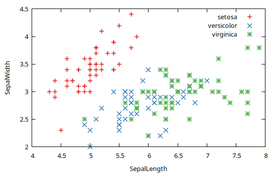
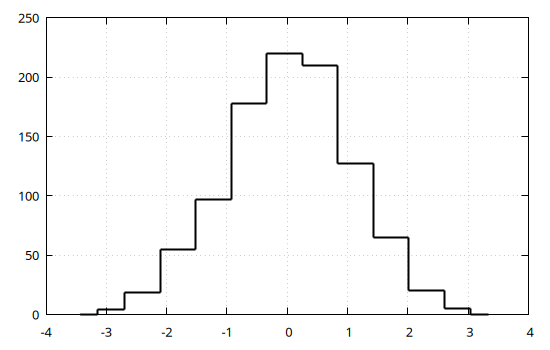
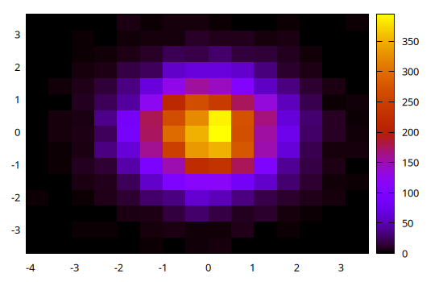
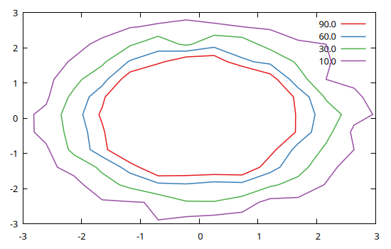
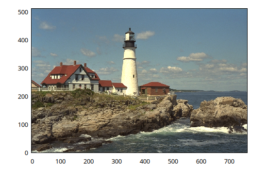
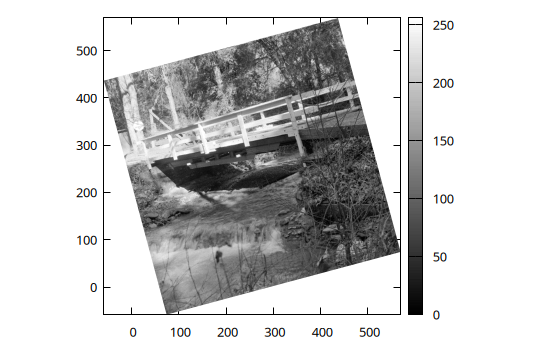

Plot recipes
A plot recipe is a quicklook visualization procedure aimed at reducing the amount of repetitive code to generate a plot. More specifically, a recipe is a function that convert data from the "Julia world" into a form suitable to be ingested in Gnuplot.jl, namely a scalar (or a vector of) Gnuplot.PlotElement object(s). The latter contain informations on how to create a plot, or a part of it, and can be used directly as arguments in a @gp or @gsp call.
There are two kinds of recipes:
explicit recipe: a function which is explicitly invoked by the user. It can have any name and accept any number of arguments and keywords. It is typically used when the visualization of a data type requires some extra information, beside data itself (e.g. to plot data from a
DataFrameobject, see Explicit recipe (example));implicit recipe: a function which is automatically called by Gnuplot.jl. It must extend the
recipe()function, and accept exactly one mandatory argument. It is typically used when the visualization is completely determined by the data type itself (e.g. the visualization of aMatrix{ColorTypes.RGB}object as an image, see Image recipes);
An implicit recipe is invoked whenever the data type of an argument to @gp or @gsp is not among the allowed ones (see @gp() documentation). If a suitable recipe do not exists an error is raised. On the other hand, an explicit recipe needs to be invoked by the user, and the output passed directly to @gp or @gsp.
Although recipes provides very efficient tools for data exploration, their use typically hide the details of plot generation. As a consequence they provide less flexibility than the approaches described in Basic usage and Advanced usage.
Currently, the Gnuplot.jl package provides no built-in explicit recipe. The implicit recipes are implemented in recipes.jl.
Explicit recipe (example)
To generate a plot using the data contained in a DataFrame object we need, beside the data itself, the name of the columns to use for the X and Y coordinates. The following example shows how to implement an explicit recipe to plot a DataFrame object:
using RDatasets, DataFrames, Gnuplot
import Gnuplot: PlotElement, DatasetText
function plotdf(df::DataFrame, colx::Symbol, coly::Symbol; group=nothing)
if isnothing(group)
return PlotElement(data=DatasetText(df[:, colx], df[:, coly]),
plot="w p notit",
xlab=string(colx), ylab=string(coly))
end
out = Vector{Gnuplot.PlotElement}()
push!(out, PlotElement(;xlab=string(colx), ylab=string(coly)))
for g in sort(unique(df[:, group]))
i = findall(df[:, group] .== g)
if length(i) > 0
push!(out, PlotElement(data=DatasetText(df[i, colx], df[i, coly]),
plot="w p t '$g'"))
end
end
return out
end
# Load a DataFrame and convert it to a PlotElement
iris = dataset("datasets", "iris")
@gp plotdf(iris, :SepalLength, :SepalWidth, group=:Species)
Histogram recipes
The object returned by the hist() function can be readily visualized by means of implicit recipes defined on the StatsBase.Histogram type (in both 1D and 2D) types:
x = randn(1000);
@gp hist(x)
x = randn(10_000);
y = randn(10_000);
@gp hist(x, y)
Contour lines recipes
The object returned by the contourlines() function can be readily visualized by means of implicit recipes defined on the Gnuplot.IsoContourLines types:
x = randn(10_000);
y = randn(10_000);
h = hist(x, y)
clines = contourlines(h, "levels discrete 10, 30, 60, 90");
@gp clines
Image recipes
The Gnuplot.jl package provides implicit recipes to display images in the following formats:
Matrix{ColorTypes.RGB{T}};Matrix{ColorTypes.RGBA{T}}Matrix{ColorTypes.Gray{T}};Matrix{ColorTypes.GrayA{T}};
To use these recipes simply pass an image to @gp, e.g.:
using TestImages
img = testimage("lighthouse");
@gp img
All such recipes are defined as:
function recipe(M::Matrix{ColorTypes.RGB{T}}, opt="flipy")
...
endwith only one mandatory argument. In order to exploit the optional keyword we can explicitly invoke the recipe as follows:
img = testimage("walkbridge");
@gp palette(:gray1) recipe(img, "flipy rot=15deg")
Note that we used both a palette (:gray, see Palettes and line types) and a custom rotation angle.
The flipy option is necessary for proper visualization (see discussion in Plot matrix as images).